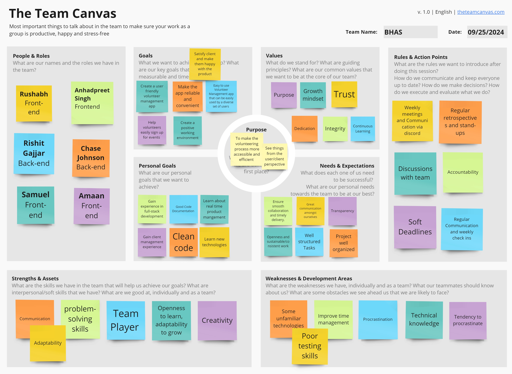

Teamwork
This page provides an overview of the team and its members.
Team Canvas

Scrum Roles
Sprint 2:
- Scrum Master - Amaan Mohammed
- Product Owner - Rishit Gajjar
Sprint 3:
- Scrum Master - Rushabh Shah
- Product Owner - Amaan Mohammed
Sprint 4:
- Scrum Master - Rishit Gajjar
- Product Owner - Anhadpreet Singh
Sprint 5:
- Scrum Master - Samuel Chan
- Product Owner - Chase Johnson
Belbin Roles
Source: https://www.belbin.com/about/belbin-team-roles.
| Name | Preferred Roles | Manageable Roles | Least Preferred Roles |
|---|---|---|---|
| Amaan Mohammed | RI, TW, IMP | CF, CO, ME | SP, PL, SH |
| Anhadpreet Singh | CF, TW, RI | IMP, SP, PL | CO, ME, SH |
| Chase Johnson | TW, PL, CO | IMP, RI, ME | SP, SH, CF |
| Rishit Gajjar | IMP, CF, ME | TW, SP, PL | RI, CO, SH |
| Rushabh Shah | TW, CO, SP | CF, PL, IMP | RI, SH, ME |
| Samuel Chan | ME, CF, SP | RI, CO, SH | IMP, TW, PL |
Thinking Roles
PL (Plant):
Tends to be highly creative and good at solving problems in unconventional ways.
- Chase Johnson (Preferred)
- Anhadpreet Singh (Manageable)
- Rishit Gajjar (Manageable)
- Rushabh Shah (Manageable)
ME (Monitor Evaluator):
Provides a logical eye, making impartial judgements where required and weighs up the team's options in a dispassionate way.
- Samuel Chan (Preferred)
- Rishit Gajjar (Preferred)
- Amaan Mohammed (Manageable)
- Chase Johnson (Manageable)
SP (Specialist):
Brings in-depth knowledge of a key area to the team.
- Rushabh Shah (Preferred)
- Samuel Chan (Preferred)
- Anhadpreet Singh (Manageable)
- Rishit Gajjar (Manageable)
Action Roles:
SH (Shaper):
Provides the necessary drive to ensure that the team keeps moving and does not lose focus or momentum.
- Samuel Chan (Manageable)
IMP (Implementer):
Needed to plan a workable strategy and carry it out as efficiently as possible.
- Amaan Mohammed (Preferred)
- Rishit Gajjar (Preferred)
- Anhadpreet Singh (Manageable)
- Chase Johnson (Manageable)
- Rushabh Shah (Manageable)
CF (Completer Finisher):
Most effectively used at the end of tasks to polish and scrutinize the work for errors, subjecting it to the highest standards of quality control.
- Samuel Chan (Preferred)
- Anhadpreet Singh (Preferred)
- Rishit Gajjar (Preferred)
- Amaan Mohammed (Manageable)
- Rushabh Shah (Manageable)
People Roles:
RI (Resource Investigator):
Uses their inquisitive nature to find ideas to bring back to the team.
- Samuel Chan (Manageable)
- Amaan Mohammed (Preferred)
- Anhadpreet Singh (Preferred)
- Chase Johnson (Manageable)
TW (Teamworker):
Helps the team to gel, using their versatility to identify the work required and complete it on behalf of the team.
- Rushabh Shah (Preferred)
- Amaan Mohammed (Preferred)
- Chase Johnson (Preferred)
- Rishit Gajjar (Manageable)
CO (Co-ordinator):
Needed to focus on the team's objectives, draw out team members and delegate work appropriately.
- Rushabh Shah (Preferred)
- Samuel Chan (Manageable)
- Chase Johnson (Preferred)
- Amaan Mohammed (Manageable)